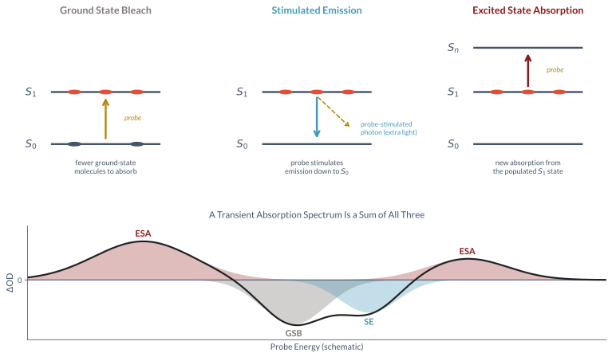

        <section>
          <h3 style="margin: 0 0 0.35em;">Transient Absorption: Three Signal Types</h3>
          
          <aside class="notes">
            <ul>
              <li>Pump excites a fraction of the molecules; delayed broadband probe measures $\Delta$OD = OD(pumped) - OD(unpumped).</li>
              <li>Ground state bleach (GSB): fewer ground-state molecules to absorb — negative signal.</li>
              <li>Stimulated emission (SE): probe stimulates emission back to $S_0$ — negative signal, only where excited state radiatively couples to $S_0$.</li>
              <li>Excited state absorption (ESA): populated $S_1$ absorbs the probe to $S_n$ — positive signal, can appear anywhere there's an allowed transition, including where the parent has no ground-state absorption at all.</li>
              <li>This is why broadband, deep-UV probes matter for photochemistry: ESA from a hot ground state or reaction intermediate can sit far from where the parent absorbs — see it directly in the DMU data.</li>
            </ul>
          </aside>
        </section>
